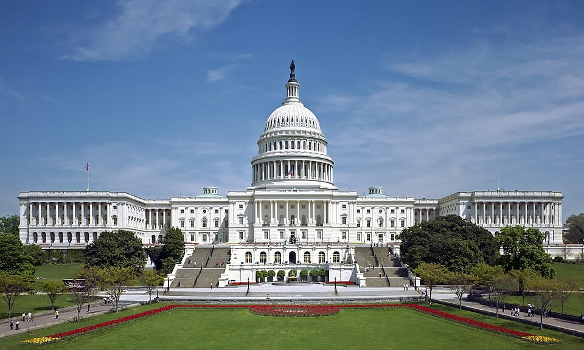

United States
Washington DC
the monuments, the Smithsonians & the Dulles-corridor food belt
134 places · 12 areas · every one sourced, pinned and status-checked · last checked · 1 closed, kept for the record. Ordered by tier, then by number of named sources. How we choose
half-smoke · crab · Lincoln Memorial
Start with Das Ethiopian Cuisine

Start with

National Mall, Tidal Basin & the Monuments 16 places · area 1 of 12
-
1 Must see within National Mall, Tidal Basin & the Monuments
Lincoln Memorial
Henry Bacon's Doric temple (1922) housing Daniel Chester French's 19-foot seated Lincoln, the terminus of the Reflecting Pool and the spot where Dr. King delivered 'I Have a Dream.' Open 24 hours, free, ranger-staffed.
Look for memorial
2 Lincoln Memorial Cir NW, Washington, DC 20037
Recommended by ,
-
2 Must see within National Mall, Tidal Basin & the Monuments
Washington Monument
The 555-foot marble obelisk (completed 1884) honoring the first president, the tallest structure in DC. Grounds are open daily; the interior elevator to the observation deck has faced repeated closures, so check NPS for current top access before you go.
Look for monument
2 15th St NW, Washington, DC 20024
Recommended by ,
-
3 Must see within National Mall, Tidal Basin & the Monuments
Thomas Jefferson Memorial
John Russell Pope's domed rotunda (1943) on the Tidal Basin, with a 19-foot bronze of Jefferson ringed by his own words. One of the finest cherry-blossom vantage points each spring.
Look for memorial
16 E Basin Dr SW, Washington, DC 20242
Recommended by ,
-
4 Must see within National Mall, Tidal Basin & the Monuments
National World War II Memorial
A plaza of 56 granite pillars and two arches around a fountain between the Washington Monument and the Reflecting Pool, dedicated 2004 to the 16 million who served. The Freedom Wall bears 4,048 gold stars.
Look for memorial
1750 Independence Ave SW, Washington, DC 20024
Recommended by ,
-
5 Must see within National Mall, Tidal Basin & the Monuments
Vietnam Veterans Memorial
Maya Lin's stark black-granite wall (1982) inscribed with the 58,000-plus names of the fallen and missing, sunk into the earth beside the Three Soldiers statue. Among the most-visited and most-moving sites on the Mall.
Look for memorial
5 Henry Bacon Dr NW, Washington, DC 20037
Recommended by ,
-
6 Must see within National Mall, Tidal Basin & the Monuments
Martin Luther King Jr. Memorial
A 30-foot 'Stone of Hope' likeness of Dr. King emerging from a split boulder on the Tidal Basin's northwest rim, opened 2011. A 450-foot inscription wall carries 14 of his quotations.
Look for memorial
1964 Independence Ave SW, Washington, DC 20024
Recommended by ,
-
7 Must see within National Mall, Tidal Basin & the Monuments
National Gallery of Art
The nation's art museum (not a Smithsonian), pairing John Russell Pope's neoclassical West Building with I.M. Pei's East Building, plus a sculpture garden. Free; home to the only Leonardo da Vinci in the Americas.
Look for museum
6th St & Constitution Ave NW, Washington, DC 20565
Recommended by ,
-
8 Must see within National Mall, Tidal Basin & the Monuments
National Air and Space Museum
The Smithsonian's flagship of flight and spaceflight, home to the Wright Flyer, Spirit of St. Louis, and Apollo 11 command module. Reopened in full for its 50th anniversary in July 2026 after a multi-year renovation; free, timed passes recommended.
Look for museum
655 Jefferson Dr SW, Washington, DC 20560
Recommended by
-
9 Must see within National Mall, Tidal Basin & the Monuments
National Museum of Natural History
The Smithsonian's natural-history giant, home to the Hope Diamond, a live butterfly pavilion, dinosaurs and the Ocean Hall. Free admission, one of the most-visited museums on earth.
Look for museum
10th St & Constitution Ave NW, Washington, DC 20560
Recommended by
-
10 Must see within National Mall, Tidal Basin & the Monuments
National Museum of American History
Keeper of the original Star-Spangled Banner, the Ruby Slippers, Julia Child's kitchen and the First Ladies' gowns. A free Smithsonian survey of the American story.
Look for museum
1300 Constitution Ave NW, Washington, DC 20560
Recommended by
-
11 Must see within National Mall, Tidal Basin & the Monuments
National Museum of African American History and Culture
David Adjaye's bronze-corona building (opened 2016), the Smithsonian's newest and among its most sought-after, tracing slavery through the present across culture, sport and struggle. Free, but timed passes are advised.
Look for museum
1400 Constitution Ave NW, Washington, DC 20560
Recommended by
-
12 Worth the detour within National Mall, Tidal Basin & the Monuments
Korean War Veterans Memorial
Nineteen stainless-steel soldiers advance through juniper toward an American flag, mirrored on a granite wall to read as 38 (the 38th parallel). The 2022 Wall of Remembrance added the names of the dead.
Look for memorial
10 Daniel French Dr SW, Washington, DC 20024
Recommended by ,
-
13 Worth the detour within National Mall, Tidal Basin & the Monuments
Franklin Delano Roosevelt Memorial
A 7.5-acre sequence of four granite outdoor 'rooms,' one per FDR term, threaded with waterfalls, sculpture and quotations. Opened 1997 on the Tidal Basin's Cherry Tree Walk.
Look for memorial
1850 West Basin Dr SW, Washington, DC 20242
Recommended by ,
-
14 Worth the detour within National Mall, Tidal Basin & the Monuments
Tidal Basin & the Cherry Blossoms
The man-made inlet ringed by the Jefferson, FDR and MLK memorials and by 3,000-plus Yoshino cherry trees, a 1912 gift from Tokyo that draws peak-bloom crowds each late March. Paddleboats and a walking loop year-round.
Look for waterfront
1501 Maine Ave SW, Washington, DC 20024
Recommended by ,
-
15 Worth the detour within National Mall, Tidal Basin & the Monuments
United States Botanic Garden
A living plant museum at the foot of Capitol Hill, its 1933 glass Conservatory holding a jungle, orchids and a seasonal garden-railway show. Free, and one of the oldest continually operating botanic gardens in the country.
Look for garden
100 Maryland Ave SW, Washington, DC 20001
Recommended by ,
-
16 Worth the detour within National Mall, Tidal Basin & the Monuments
Hirshhorn Museum and Sculpture Garden
The Smithsonian's modern and contemporary art museum, a cylindrical 'donut' by Gordon Bunshaft with a sunken sculpture garden across Jefferson Drive. Free; strong in Rothko, Bourgeois and immersive installations.
Look for museum
Independence Ave SW & 7th St SW, Washington, DC 20560
Recommended by

Downtown, Penn Quarter & Chinatown 15 places · area 2 of 12
-
1 Must see within Downtown, Penn Quarter & Chinatown · Chinese
Daikaya
The restaurant that introduced DC to serious ramen (2013): a Sapporo-style ramen bar downstairs with noodles handcrafted and imported from Japan, and a full izakaya upstairs, from chef Katsuya Fukushima. A perennial Eater essential; The Infatuation and Gayot both rate it a Chinatown/Penn Quarter must, and there's usually a line.
705 6th St NW, Washington, DC 20001
Recommended by , ,
-
2 Must see within Downtown, Penn Quarter & Chinatown
The White House
The executive mansion and workplace of every president since John Adams, viewable from Lafayette Square and the south Ellipse. Interior tours are free but must be arranged well ahead through a member of Congress.
Look for landmark
1600 Pennsylvania Ave NW, Washington, DC 20500
Recommended by ,
-
3 Must see within Downtown, Penn Quarter & Chinatown
National Archives Museum
Home of the Declaration of Independence, the Constitution and the Bill of Rights, displayed in the Rotunda for the Charters of Freedom. Free admission.
Look for landmark
701 Constitution Ave NW, Washington, DC 20408
Recommended by ,
-
4 Must see within Downtown, Penn Quarter & Chinatown · American
Rania
One Michelin star — chef Chetan Shetty (ex-Indian Accent) reinvents Indian fine dining in a regal Penn Quarter room; the Washington Post calls it adventurous Indian cooking in a regal setting. Starred in the 2025 MICHELIN Guide.
427 11th St NW, Washington, DC 20004
Recommended by ,
-
5 Must see within Downtown, Penn Quarter & Chinatown · American
Fiola
One Michelin star — Fabio Trabocchi's luxe downtown Italian, a longtime power-dining room off Pennsylvania Avenue. Holds its star in the 2025 MICHELIN Guide Washington, D.C.
601 Pennsylvania Ave NW, Washington, DC 20004
Recommended by ,
-
6 Must see within Downtown, Penn Quarter & Chinatown · American
Rasika
DC's most acclaimed Indian restaurant — Ashok Bajaj's Penn Quarter icon, whose crackling palak chaat is a citywide signature; a MICHELIN Guide recommended pick and a perennial Washingtonian 100 Very Best.
633 D St NW, Washington, DC 20004
Recommended by ,
-
7 Must see within Downtown, Penn Quarter & Chinatown
Smithsonian American Art Museum & National Portrait Gallery
Two free Smithsonian museums sharing the Greek Revival Old Patent Office Building in Penn Quarter, joined by the glass-roofed Kogod Courtyard. The Portrait Gallery's 'America's Presidents' is the only complete set outside the White House.
Look for museum
800 G St NW, Washington, DC 20001
Recommended by
-
8 Worth the detour within Downtown, Penn Quarter & Chinatown
Ford's Theatre
The still-operating 1863 theater where Lincoln was shot on April 14, 1865, now an NPS site with a museum and the Petersen House (where he died) across the street. Working stage plus historical tours.
Look for historic
511 10th St NW, Washington, DC 20004
Recommended by ,

Georgetown & Foggy Bottom 8 places · area 3 of 12

Dupont, Logan Circle & Adams Morgan 8 places · area 4 of 12

U Street, Shaw & Columbia Heights 16 places · area 5 of 12

Capitol Hill, H Street, Navy Yard & The Wharf 18 places · area 6 of 12

Arlington & National Landing 16 places · area 7 of 12

Old Town Alexandria 6 places · area 8 of 12

Tysons, McLean & Vienna 7 places · area 9 of 12

Reston, Herndon & the Dulles Corridor 5 places · area 10 of 12

Falls Church, Annandale & Eden Center 10 places · area 11 of 12

Fairfax, Merrifield (Mosaic) & Chantilly 9 places · area 12 of 12
How we choose
Every place is recommended by named sources (review-aggregator star ratings never count as the recommender), pinned to its door from a published coordinate, and status-checked. Closed places stay, flagged, so you know they’re gone.
- Must see
- The places to plan a visit around — graded within each area, not across the city.
- Worth the detour
- Strong picks, worth going out of your way for.
- Deep cut
- For the curious: smaller, odder, more local.
Within each area, places are ordered by tier, then by number of named sources — never by popularity. Numbers on the cards match the pins on the map. No ratings, prices or opening hours are shown, because the guide doesn’t hold verified ones.
75 sights and 59 places to eat from the National Mall out through Arlington to the Dulles corridor, each traceable to the source that named it. The monumental core — the Lincoln and Jefferson memorials, the free Smithsonians, the Capitol — anchors the map; the food runs on what the region does best: the half-smoke at Ben’s, DC’s Ethiopian and Salvadoran kitchens, Chesapeake crab and oysters, the Michelin room and the Vietnamese sprawl of Eden Center.
Take Washington DC with you
Every place, its sources, the Guidebook and the photos at a small size. Map tiles are not saved: offline, the map shows our own pin schematic and every place stays listed.